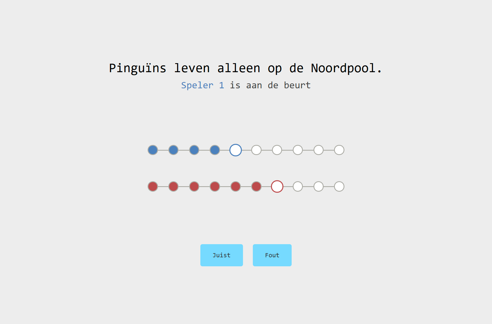

In deze tutorial maken we een quiz-minigame waarbij je 1 tegen 1 kunt spelen. De eerste speler die 10 punten behaalt, wint de game.
Hiervoor gebruiken we 3 codetalen
- HTML
- CSS
- JavaScript
Stap 1: Mappenstructuur
Download en installeer de code editor Visual Studio Code
- 1.1 Maak een nieuwe folder met de naam kennis-race.
- 1.2 Open Visual Studio Code en open de nieuwe folder.
-
1.3 De map- en bestandsstructuur ziet er zo uit:

-
1.4 Installeer de Live Server extensie in Visual Studio Code.

-
1.5 Start de Live Server door onderaan op Go Live te klikken. Dit opent een nieuw browservenster met je project.

Stap 2: HTML
HTML vormt de basis van je website. Gebruikersinteractie volgt later.
-
2.1 Kopieer onderstaande code in het index.html bestand. Dit is de basis stuctuur van een webpagina.
<!DOCTYPE html> <html lang="en"> <head> <meta charset="UTF-8"> <meta name="viewport" content="width=device-width, initial-scale=1.0"> <title>Kennis Race</title> <link rel="preconnect" href="https://fonts.googleapis.com"> <link rel="preconnect" href="https://fonts.gstatic.com" crossorigin> <link href="https://fonts.googleapis.com/css2?family=Major+Mono+Display&display=swap" rel="stylesheet"> <link rel="stylesheet" href="./css/main.css"> </head> <body> <main class="quiz"> <!-- Voeg hier code toe --> </main> <script type="module" src="./src/scripts/main.js"></script> </body> </html>
2.2 Voeg nu deze code toe aan je index.html, tussen de <main> en </main> tags.
<section class="quiz__content">
<h1 class="quiz__question">Quizvraag</h1>
<p class="quiz__turn">
<span class="quiz__player--1">Speler x</span>
is aan de beurt
</p>
<p class="quiz__answer"></p>
</section>
<section class="buttons">
<button class="button button--true">Juist</button>
<button class="button button--false">Fout</button>
</section>
Nu zal je webpagina er zo uitzien, een titel met subtitel en twee knoppen.
Deze code zal nog niet visueels toevoegen, maar later worden dit de voortgangsbalken van de spelers.
<section class="quiz__progress">
<div class="progress progress--player1">
<div class="progress__step progress__step--current"></div>
<div class="progress__step"></div>
<div class="progress__step"></div>
<div class="progress__step"></div>
<div class="progress__step"></div>
<div class="progress__step"></div>
<div class="progress__step"></div>
<div class="progress__step"></div>
<div class="progress__step"></div>
<div class="progress__step"></div>
</div>
<div class="progress progress--player2">
<div class="progress__step progress__step--current"></div>
<div class="progress__step"></div>
<div class="progress__step"></div>
<div class="progress__step"></div>
<div class="progress__step"></div>
<div class="progress__step"></div>
<div class="progress__step"></div>
<div class="progress__step"></div>
<div class="progress__step"></div>
<div class="progress__step"></div>
</div>
</section>
Stap 3: CSS
CSS zorgt voor de vormgeving en stijl van je website.
-
3.1 Plak deze code in je main.css bestand. Dit geeft een mooie layout aan het spel.
Alle kleuren kun je zelf kiezen en aanpassen, hoe je zelf de game eruit wil laten zien.
body { font-family: monospace; margin: 0; background-color: #efefef; } .quiz { display: flex; flex-direction: column; justify-content: center; align-items: center; height: 100vh; gap: 8rem; text-align: center; } .quiz__content { font-size: 1.5rem; } .quiz__question { font-size: 2rem; font-weight: 500; } .quiz__turn, .quiz__answer, .quiz__link { color: #7e7e7e; font-weight: 400; } .quiz__answer { position: absolute; left: 50%; transform: translateX(-50%); } .quiz__progress { display: flex; flex-direction: column; align-items: center; gap: 4rem; } .quiz__player--1 { color: #4b81bd; } .quiz__player--2 { color: #bd4b4b; } .progress { position: relative; display: flex; justify-content: space-between; width: 500px; padding: 0 10px; } .progress--player1 { .progress__step--completed { background: #4b81bd; } .progress__step--current { background: #efefef; border: 2px solid #4b81bd; transform: scale(1.2); } } .progress--player2 { .progress__step--completed { background: #bd4b4b; } .progress__step--current { background: #efefef; border: 2px solid #bd4b4b; transform: scale(1.2); } } .progress::before { content: ''; position: absolute; top: 12px; left: 15px; right: 15px; height: 2px; background-color: #7e7e7e; z-index: 0; } .progress__step { position: relative; width: 25px; height: 25px; background: #efefef; border: 2px solid #7e7e7e; border-radius: 50%; transition: all 0.3s ease; z-index: 2; } .buttons { display: flex; justify-content: center; align-items: center; gap: 1.5rem; font-size: 1rem; } .button { background-color: #77daff; color: #333; padding: 1rem 2rem; border: none; border-radius: .5rem; cursor: pointer; } .button:hover { background-color: #0af; color: #fff; transition: background-color 0.3s ease, color 0.3s ease; }